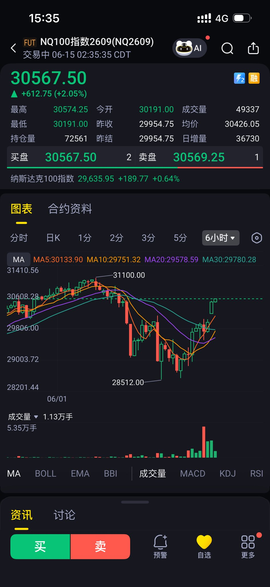
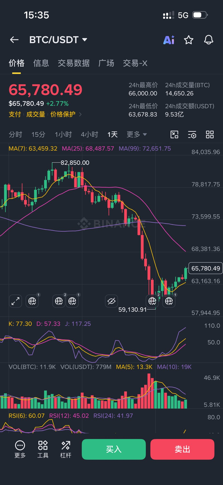

一、纳斯达克100期货 NQ2609
1. 高点→最低点跌幅
高点：31100.00
低点：28512.00
下跌幅度
(31100 - 28512) ÷ 31100 × 100% = 8.32%
2. 低点→当前反弹涨幅
现价：30567.50
反弹幅度
(30567.5 - 28512) ÷ 28512 × 100% = 7.21%
二、BTC/USDT
1. 高点→最低点跌幅
高点：82850.00
低点：59130.91
下跌幅度
(82850 - 59130.91) ÷ 82850 × 100% = 28.63%
2. 低点→当前反弹涨幅
现价：65780.49
反弹幅度 =
(65780.49 - 59130.91) ÷ 59130.91 × 100% = 11.25%
三、倍数对比
1. 下跌阶段
28.63% ÷ 8.32% = 3.44倍
下跌时
比特币跌幅是纳斯达克100期货的3.44倍
2. 反弹阶段：
11.25% ÷ 7.21% = 1.56倍
从最低点反弹至今
比特币上涨幅度是纳斯达克100期货的1.56倍
汇总简表
• 下跌力度：BTC波动是纳指 3.44倍
• 反弹力度：BTC波动是纳指 1.56倍
你还玩btc吗

